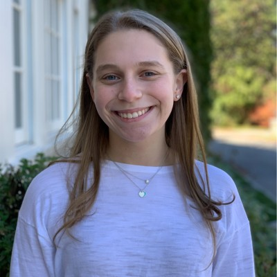

Goldman Sachs Summer Analyst
This past summer I had the opportunity to intern at Goldman Sachs on their Performance Management team within their HR division. As an intern, I learned that I thrive in a fast-paced collaborative environment. I analyzed a range of performance management technology systems and made recommendations to my team. People are a company’s most important asset, and I enjoyed helping the team develop metrics to identify top performers.
About Me

Hi! My name is Leah. I am currently a Junior at the University of Michigan pursuing a BSI (Bachelor of Science in Information) degree in the School of Information. I am also minoring in applied statistics in LSA (School of Literature, Science, and the Arts). I have always been a problem solver who strives to create innovative and practical solutions to real world problems. I have an entrepreneurial spirit and am passionate about doing work to enhance my community. I hope to continue to find ways to use data and technology to improve people’s lives. This summer, I hope to learn from leaders and entrepreneurs in various healthcare sectors and disciplines.
Related Experiences
TOM (Tikkun Olam Makers) Fellow
An important part of my Michigan experience on campus has been my work with TOM Michigan whose goal is to understand the challenges of people with physical disabilities (Need Knowers) and then work with those individuals to create solutions by leveraging technology. This group employs a multidisciplinary approach to deliver innovative and practical solutions to each Need Knower. These solutions are then added to the TOM global database of products and prototypes, making them easily accessible worldwide. This club is relatively new to Michigan's campus, and as a fellow, I am working to make a greater impact on the community.
FLAG (Front Line Appreciation Group) Westchester Co-Founder
At the onset of the Pandemic, I remember sitting around my kitchen table talking with my family. We talked about the bravery of the frontline workers and our admiration for these men and women who were risking their lives. In the background, I heard the reporters on TV covering the financial struggles local restaurants were experiencing. I had a bit of an “Aha” moment as I thought about the frontline workers and food! I wondered if there was a way to help the struggling restaurants and also feed the frontline heroes? And so I co-founded FLAG (Front Line Appreciation Group) Westchester, a fundraising effort to employ local restaurants to feed frontline workers. We launched a social media campaign and raised over $15,000 to deliver close to 2,300 meals to area hospitals and local EMS departments.
Healthcare Product Inventor
My High School Engineering and Entrepreneurship team has submitted a provisional patent application for our electronic, attachable, retractable wheelchair ramp:
Challenged to identify a need and then develop a prototype to address the need, my teammates and I designed a retractable ramp that attaches to the underside of a wheelchair, enabling wheelchair bound people to independently navigate street curbs and small flights of stairs. According to the Americans with Disabilities Act, public buildings with full flights of stairs are required to have an elevator, but many residences and private buildings do not need to meet ADA codes and guidelines. While there are many existing wheelchairs that are built specifically to climb a small flight of stairs, there are no simple and cost-effective solutions to transform existing wheelchairs to be able to climb just a few steps, so we created one. Our ramp easily attaches underneath the wheelchair seat. With the push of a button, a gear extends a ramp from under the seat, and then a second gear expands the width of the ramp so that the wheels of the chair can roll on top of it. Once the user successfully navigates the change in elevation, they can push the button again, contracting the ramp and storing it in its initial position.